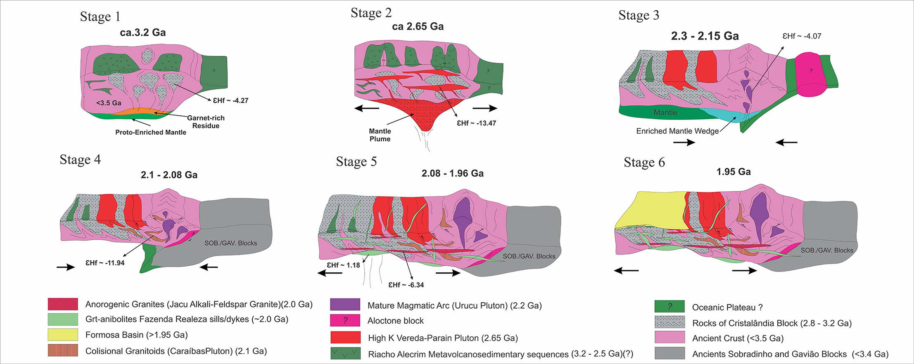

Archean and Paleoproterozoic crustal evolution and evidence for cryptic Paleoarchean-Hadean sources of the NW São Francisco Craton, Brazil: Litogeochemistry, geochronology and isotope systematics of the Cristalândia do Piauí Block

Resumo em Português
O Bloco Cristalândia do Piauí, localizado na margem noroeste do Cráton São Francisco, representa o embasamento da Faixa de Dobramento Rio Preto. É composto por ortognaisses Arqueanos de ~3,2 Ga retrabalhados em 2,81 e 2,68 Ga com valores de εHf juvenis a moderadamente juvenis entre −1,51 e −8,07, e sienogranitos de alto-K datados em 2,65 Ga com valores de εHf crustais entre −10,37 e −19,54, ambos com idades modelo (TDMc) variando de 3,57 a 4,33 Ga, indicando fontes crípticas Paleo- a Eoarqueanas e até Hadenas. Rochas metamáficas-ultramáficas, formações ferríferas, metacherts e xistos grafitosos ocorrem em associação com o ortognaisse Arqueano.O conjunto é intrudido por metagranitoides Paleoproterozoicos (~2,2 Ga) com composições variando de granodioríticas com assinaturas do tipo sanukitoide a monzograníticas e graníticas de feldspato-alcalino com assinaturas crustais. Rochas metassedimentares Orosirianas são representadas por paragnaisse a granada-biotita com idade máxima de deposição de ~1,95 Ga. Diques máficos intrusivos no complexo mostram idades de ~2,07 Ga e feições isotópicas de magmas derivados do manto. O Bloco Cristalândia do Piauí representa um domínio metacratônico correspondente a parte da Paleoplaca Guanambi-Correntina, envolvida em acreção e retrabalhamento crustais do Arqueano ao Paleoproterozoico. Muitos dos elementos dos estágios evolutivos presentes no Paleocontinente São Francisco-Congo podem ser reconhecidos, sugerindo uma evolução desse segmento crustal até a Era Eoarqueana e revelando a existência de núcleos crípticos Paleoarqueanos ou até Hadenos, retrabalhados em pelo menos três eventos metamórficos durante a orogenia Riaciana-Orosiriana.